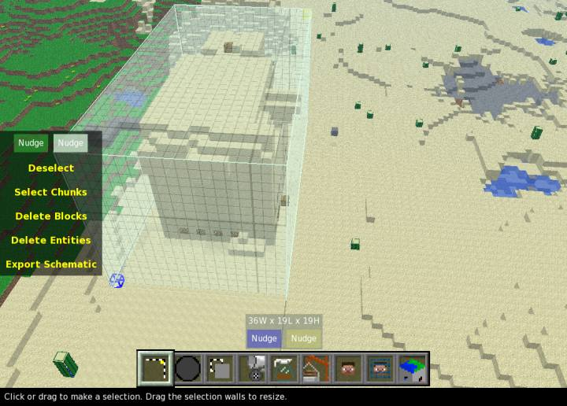
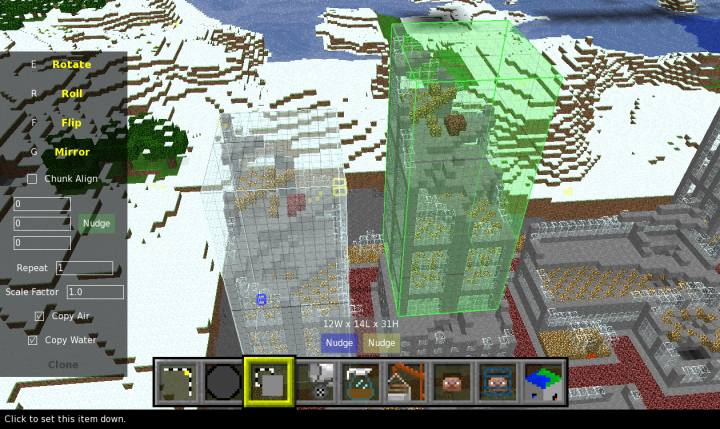
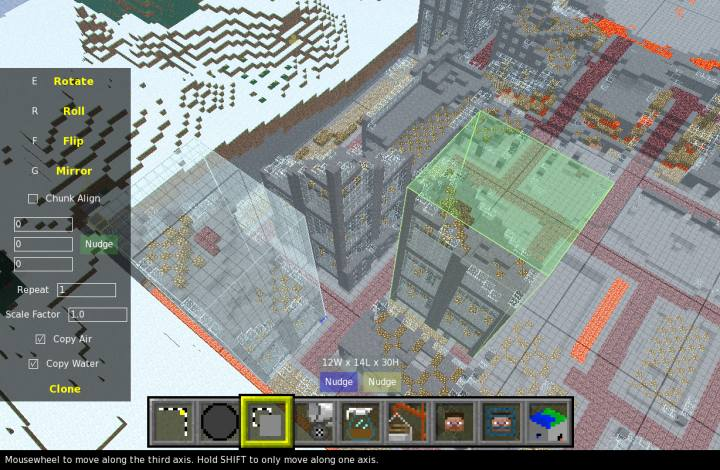
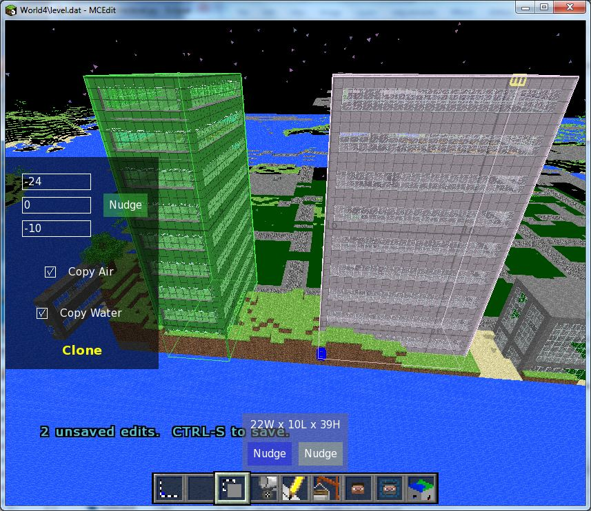
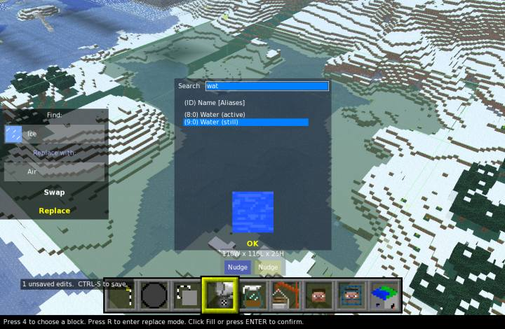
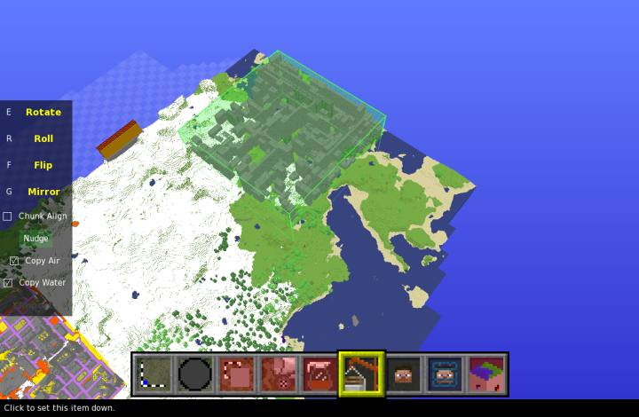
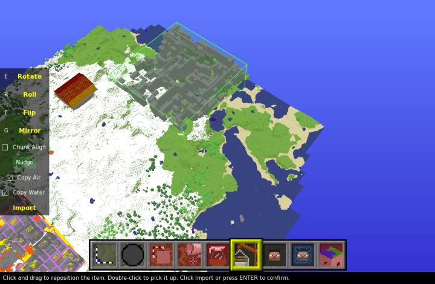
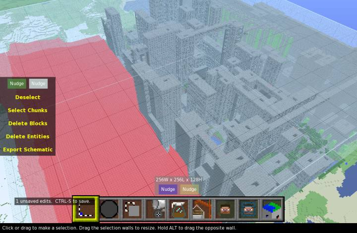
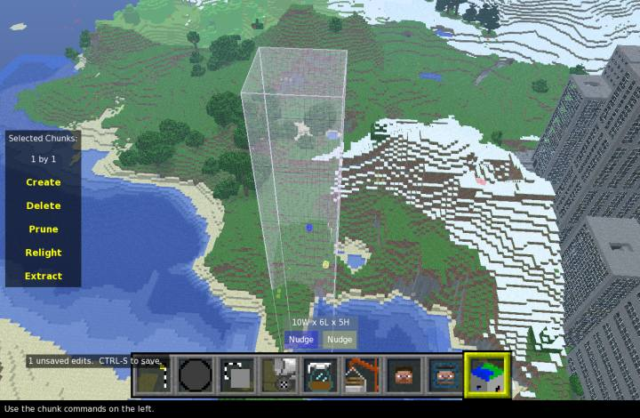

For info about the latest version, be sure to visit the
For info about the latest version, be sure to visit the 
MCEdit is a versatile map utility, designed for moving blocks from one level to another. With it, you can open a level of nearly any type and fly around in glorious 3D with multiple levels of detail! Select millions of blocks and clone them anywhere else in the level. Fill a boxy selection with the block of your choice, or replace one kind of block with another. Export blocks to a "schematic" file for later use. Import a schematic or an entire level into any world using the crane. Move the player or his spawn point. Create and and remove chunks from the world. Fill blackened areas with light. Find bugs!
Controls:
WASD - Move
Q / Z - Altitude
SPACE - Stop
Right-Click - Toggle Look-Mode
Right-Click and Drag - Quick Look
Left-Click - Use Tool
1-9 - Select Tool
Mousewheel - Change Tool Distance
E - Rotate Blocks
R - Roll Blocks
F - Flip Blocks
ESCAPE - Holster Tools
DELETE - Remove Selected Blocks
F1-F5 - Open World1-World5
O - Open Level...
N - Create World...
Control-S - Save World
Control-A - Select All
Control-D - Deselect
Control-F - Change view distance
Alt-F4 - Leave
Control-Z - Undo
Here's a quick overview of a few of the different tools we have:
-
Selection: Make a selection by marking its corners. Press again to switch corners.
-
Clone: Copies the selected blocks. Click to set the copy down, then press "Clone" to clone.
E R F
to transform blocks.
- Fill: Fills the selection with a chosen block type, optionally replacing another type. R to start replacing, E to swap materials.
- Pencil: Export the selection as a Schematic file for later use.
- Crane: Import a Schematic file or an entire level. Use this to convert older levels by importing them into an Alpha world.
- Player: Click to move the player. Press twice to teleport.
- Spawn: Click to move the player's spawn. Press twice to teleport.
- Chunk: Create, delete, and light chunks. Prune away all of the chunks outside the selection.
There are a few Nudge buttons scattered around. To use them, click and hold down on one. While holding the mouse button, use the movement keys (defaults: WASDQZ ) to move the related item around. Hold Shift to nudge further.
If you have a powerful computer, press Control-F to see farther.
Selection tools:
Mark a selection using blue and yellow cubes. Here is a selection in progress.

A selection.

{kind=link}
Clone tool:
Quickly copy blocks within the same level. The selected blocks are cloned into the green box and will follow your cursor around until you click.

{kind=link}
Click once, and your duplicate blocks are set down and will begin pulsating. Click again to pick them back up.

{kind=link}
Use the keys E R F to rotate, roll, and flip the blocks.

{kind=link}
Press ENTER or click Clone to expand public housing. The clone is finished when the selection is moved to the newly cloned object.

Fill tool:

{kind=link}
You'll have to play around with this one on your own.
Pencil tool:
Save the current selection as a "schematic" file. This file can be loaded into another level using the Crane. Nothing interesting to see here, unless you want a pic of a "Save file..." window.
Crane tool:
The crane tool lets you import blocks from different sources: It can place blocks previously saved by the pencil to a schematic. It can import .inv files created by INVEdit as chests. It can import an entire level into another level. It will ask you to choose a level or schematic. After you've chosen, the level or schematic will appear in the green box. The blocks are fully loaded and ready to use, even though they appear slowly. Click to set it down.

{kind=link}
Here, I've placed the destroyed city.
As before, you can click to pick the blocks up, and use E R F to rotate, roll, and flip them.

{kind=link}
Press ENTER or click Import to construct. Constructions of up to 64 million blocks should take less than a minute. The copy is done once you regain control. You should press Control-S to save your level now. The lighting recalculation for this city took about 3 minutes on a Core i5.

{kind=link}
Et voila.

Chunk tool:

When you pick the Chunk tool, the visible selection is automatically expanded to cover all of the chunks it touches. Press Create to create all missing chunks in the selection, ignoring any chunks already present. Press Destroy to remove any chunks within the selection. Use Prune to keep all of the chunks in the selection, and delete the ones outside. All of these will ask you for confirmation because there's no way to undo them.
Finally, you can press Relight to fix any bad lighting within the selected chunks. If other programs leave your level full of black spots, you can fix it with this.
(not pictured: Player and Player Spawn tools, DELETE operation)
Click here for downloads
A few people can't get MCEdit to start up or do anything at all. If MCEdit doesn't work for you, please post here or keep in touch via PM or e-mail. I'll try to work with you and figure out what's wrong.
MCEdit: over one trillion blocks cloned